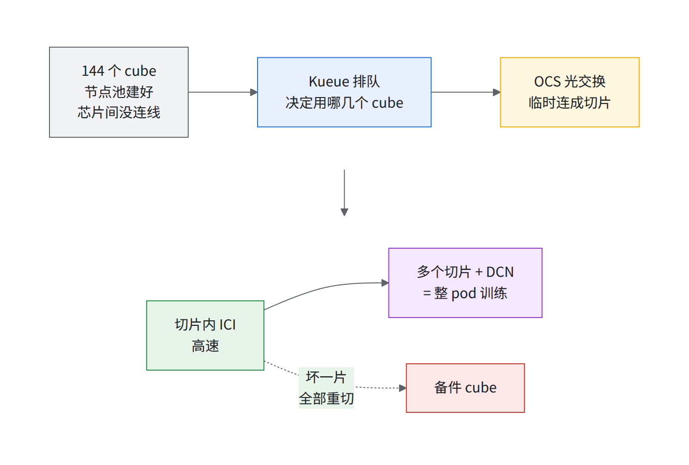
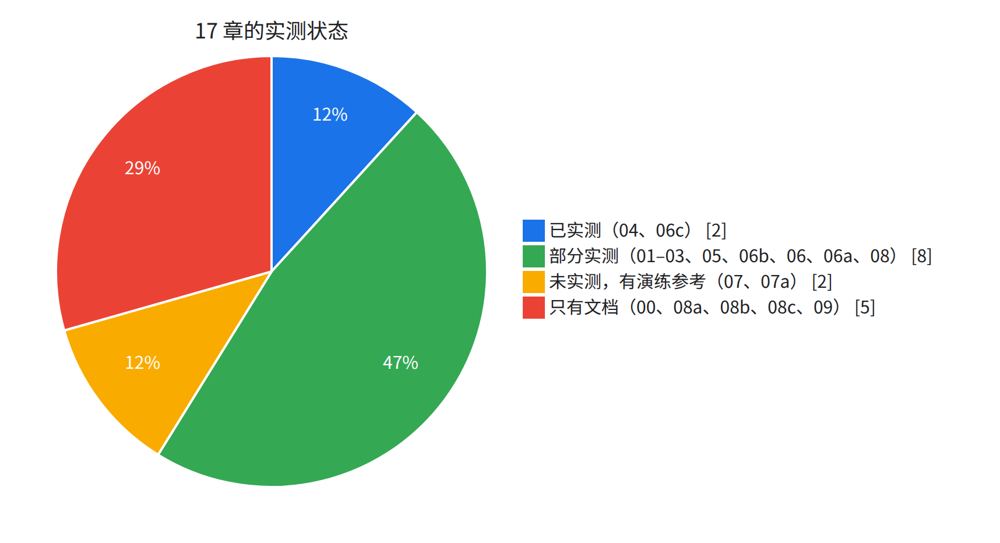
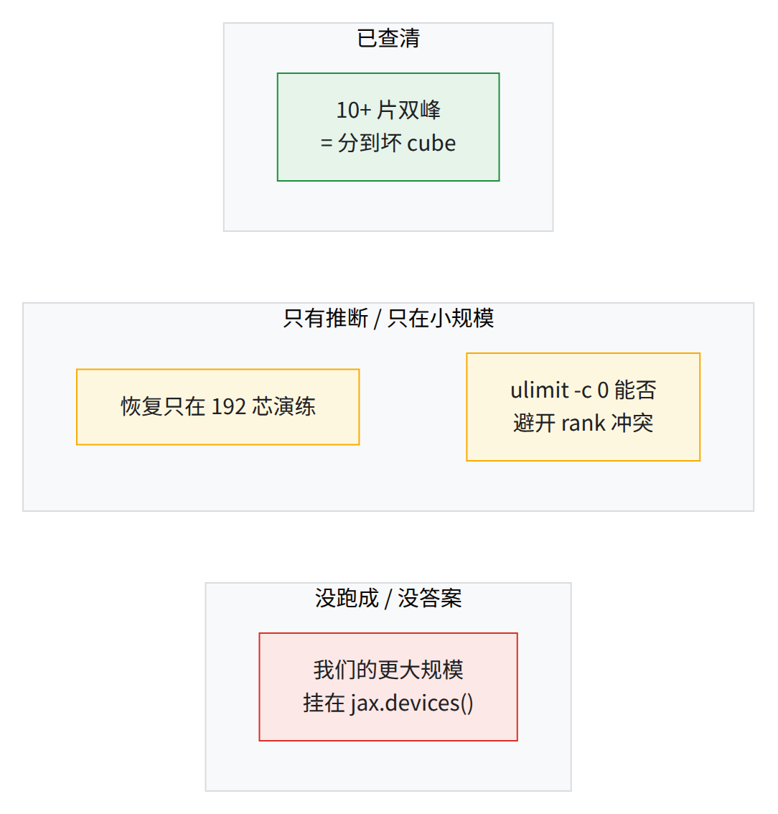

TPU v7x 整 pod（All Capacity 模式）GKE 交付手册
给把 1 个 TPU v7x pod 交付给使用方的实操同学（1 block × 144 sub-block × 16 host × 4 chip = 9,216 chip），会 Kubernetes 就能看。
- 每步：目标 → 命令 → 期望输出 → 经验教训。
- 「实测」= 在实测集群上照本书脚本跑。
- 实测集群上的生产作业：大号 MoE 模型、10+ 片（数千芯）稳态步时比本书首次跑通的 10+ 片 JIT 缩短约 40%，更大规模按同一基准也是约 40%。
- 本手册只管交付与跑稳；模型怎么调快见配套文档《混合注意力 MoE 模型在 TPU v7x 上的训练优化》。
- 9,216 颗芯片 / 144 cube
- 8 个交付阶段（A–H）
- 数千芯 10+ 片训练实测跑通
- 约 40% 10+ 片稳态步时比首跑 JIT 缩短（实测集群生产）
- 约 30% 1 片 AOT 生产步时比首跑 JIT 缩短
- 66 条经验教训
先用三句话建立心智模型
- 一个 pod = 144 个 cube（16 台 VM、64 芯），一 cube 一个节点池；建好时芯片间没有连线。
- 光交换（OCS）把几个 cube 临时连成 Slice（切片）：片内走 ICI，片间走 DCN。
- Kueue 排队决定用哪几个 cube；坏一片全部重切，所以留备件 cube。

⚠️「pod」有两种意思第 1 句是 TPU 物理 pod；后文大多数「pod」是 Kubernetes pod（一台 host 一个，1 片 64 个，N 片 N × 64 个）。见 00 术语表（全部术语）。
交付流程
| 阶段 | 章节 | 实测 |
|---|---|---|
| A 容量与前置 | 01、09 | 部分 |
| B 建集群 | 02 | 只读检查 |
| C 装组件 | 03 | 只读检查 |
| D 功能验证 | 04 | 实测到 10+ 片 |
| E 切片操作 | 05 | 部分 |
| F 训练 | 06c、06b、06、06a | 06c 实测；06b、06、06a 部分 |
| G 韧性 | 07、07a | 部分（07 有打断实测；故障演练本书脚本没跑，实测集群上有过一次 3 片演练可作参考） |
| H 运维就绪 | 08、08a、08b、08c | 08 部分；08a–c 只有文档 |
集群已经建好时
最小依赖（版本要求同 01 §1.0「工具前提」表，01-precheck.sh 第 1 段会逐个查）：
gcloud+ beta 组件、gke-gcloud-auth-plugin；kubectl（与集群差 ≤1 个 minor）、helm≥ 3.8.0；jq、python3、envsubst（gettext）。
bash
cp <解压目录>/runbook/scripts/env.sh ~/runbook-env.sh # 脚本整包在 scripts/ 目录页下载（runbook-scripts.tar）；编辑它：填 <…> 占位，另填 RUNBOOK_DIR=<解压目录>/runbook
source ~/runbook-env.sh && rb_env_check PROJECT REGION ZONE CLUSTER # 期望：没有输出
gcloud container clusters get-credentials $CLUSTER --location $ZONE --project $PROJECT --dns-endpoint
- 已有集群的
TPU_FLAVOR、CLUSTER_QUEUE等对象名要按现场填（实测集群TPU_FLAVOR=<池数>xtpu7x-128），现场与本书的差异见 03 §3.7。
训练怎么跑
使用方路径
- 先跑公开配方 06b（DeepSeek-V3，公开镜像）：验收基线用它的 JIT 阶梯（§7），AOT（§5）用来在 CPU 上先核 HBM。
- 片数、形状：06。
- 大规模作业建议提前编译（AOT），省掉每次重启时的编译时间；Google 可协助。
JIT 逐级的判读样板见 06c §6.5。
章节目录
部分实测的范围见各章开头。

| 章 | 解决什么问题 |
|---|---|
| 00 总览 | 两个 slice controller；为何没有 144-cube 单片；128 + 备件与 SLO；术语表 |
| 01 容量与前置 | sub-block 健康、配额、钉版本、冻结网络、存储、先拍板的 4 项决策（全表见 09） |
| 02 建集群 | 一 cube 一池、15/16 与 8/16 的池、CoreDNS、三方对账 |
| 03 集群内组件 | Kueue、kueue-slice-controller、7 层 Topology、配额 |
| 04 功能验证 | 巡检逐级到 10+ × 4x8x8：激活基线、拆除检查、DCN 基准 |
| 05 动态切片操作 | 生命周期、两条路径、防碎片、删除顺序、分诊、隔离坏 cube |
| 06 申请 slice | 片数、JobSet 逐字段、多片互联、placement 与 TAS |
| 06a 存储 | Anywhere Cache、20 Tbps 缓存带宽配额、dashboard、gcsfuse 配置（实测集群实况） |
| 06b 公开配置训练配方 | DeepSeek-V3 671B × 10+ 片 4x8x8；32+2 个编译器 flag；AOT 核 HBM（95.87 GiB OOM → 78.82） |
| 06c 数千芯片训练 | 复现一个数百 B 级 MoE 模型的多片训练：loss 对齐、规模边界 |
| 07 韧性与恢复 | MTC、失败策略、多次打断实测、exit 0 ≠ 成功 |
| 07a 故障恢复专题 | 演练梯子、注入手段与副作用、MTC 存取时间、自动 / 手动换片、10+ 片 / 更大规模逐段时间账、2 片演练能否代替大规模演练 |
| 08 日常运维 | 7 种假象、29 条告警、14 条日志查询、自触发维护、升级顺序、7 本事故手册 |
| 08a 慢节点标准流程 | 三道关（准入 / 每周轮测 / 在岗按片盯）+ 离线复测定案；吸收一套现成的 cube-check / 跨片 probe |
| 08b 可观测性 | 看什么、看板怎么排、怎么靠它找到问题：拆解实测集群上可观测性平台的思路，5 个案例走查，设计原则与反模式，使用方最小版 / 完整版落地 |
| 08c 上线周的生产事故 | 九类问题按「会出什么 → 提前防 → 怎么判 → 怎么处理」 |
| 09 交付前对齐清单 | 和使用方书面定的 23 项；RACI；T−14 → T+14（T−14 起与 01 并行开始，不是读完 08 再看） |
| scripts/ | 唯一变量块 env.sh（rb_env_check 拦空值）；脚本以章号开头，可 dry-run、幂等 |
交付清单（按顺序勾）
「实测」列怎么读（「实测」只算照本书脚本跑过的；用现有的程序或演练跑出来的写「可参考」，不算实测）：
- 实测通过：照本书脚本 / 清单在真集群上跑过，结果符合判据。
- 实测→已修 / 部分实测→已修：跑过，发现本书的错并已改。
- 部分实测：只验证了一部分，「在哪」那章开头写了哪部分。
- 观察到：没照本书步骤装或跑，只在实测集群看到了对应的配置或行为。
- 反向实测：本书配置没装过；在实测集群的不同配置上验证了「书里预测会失败的确实失败」。
- 实测发现：测试中撞到的问题，已写进经验教训；检查项本身没演练。
- 实测未过：照本书跑了，没达到判据。
- 未实测 / 空着：没跑过，按资料写的。
A. 容量与前置
| ☐ 检查项 | 在哪 | 实测 |
|---|---|---|
reservation READY、ALL_CAPACITY、DENSE、9,216 chip |
01 §1.1 | 实测通过 |
deleteAtTime 进日历，30/14/3 天提醒 |
01 §1.1 | 实测通过 |
| 1 block / 144 sub-block；≥130 个 HEALTHY 16/16，DEGRADED 已登记 | 01 §1.2 | 实测→已修 |
| 可触发的 pending 维护已做完 | 01 §1.3 | 实测→已修 |
| 配额 limit 全 ≥ 需求 | 01 §1.4 | 部分实测 |
| IAM、API、数据桶与 MTC 桶权限 | 01 §1.5 | 部分实测 |
| 版本 BOM 经 Google 确认、全部 ≥ 下限 | 01 §1.6 | 未实测 |
| 网络设计冻结（3 VPC MTU 8896、NAT、Pod CIDR、DNS） | 01 §1.7 | 未实测 |
| 存储方案与全规模检查点基准排期 | 01 §1.8 | 未实测 |
| 与使用方书面对齐 23 项 | 01 §1.9、09 §9.0 | 未实测 |
B. 建集群（本书未从零执行，只跑了只读检查）
| ☐ 检查项 | 在哪 | 实测 |
|---|---|---|
| VPC/子网/NAT，节点可出公网 | 02 §2.1 | |
Slice CRD 存在；系统池 workloadMetadata=GKE_METADATA |
02 §2.2 | 实测→已修 |
workload policy 4x4x4 / PROVISION_ONLY / HIGH_THROUGHPUT READY |
02 §2.3 | |
| 每 sub-block 一个 16 节点池，surge 0 / unavailable 16 | 02 §2.4 | |
| partial / ERROR 池处理并提单 | 02 §2.5 | 部分实测 |
| DNS 切换并验证 | 02 §2.6 | |
| 标签对账：partition id 节点 = 16×N、distinct id = N；allocatable 全 4；每 VM 3 网卡 | 02 §2.7 | 实测通过 |
C. 集群内组件（本书未从零安装，安装步骤未实测）
| ☐ 检查项 | 在哪 | 实测 |
|---|---|---|
| JobSet | 03 §3.1 | |
Kueue，waitForPodsReady 已生效 |
03 §3.2 | 实测→已修 |
| kueue-slice-controller：digest 钉死、2 副本、PDB、critical | 03 §3.3 | 观察到 |
| 7 层 Topology + AdmissionCheck + ResourceFlavor | 03 §3.4 | 反向实测 |
| ClusterQueue 配额 = min(128, 健康 cube − 备件 S) × 64；LocalQueue；PriorityClass | 03 §3.5 | 观察到 |
| （可选）Kyverno 策略 | 03 §3.6 | |
| dry-run JobSet 出两条 TAS 注解；AdmissionCheck Active | 03 §3.7 |
D. 功能验证
| ☐ 检查项 | 在哪 | 实测 |
|---|---|---|
| 主机巡检（维护窗口内） | 04 §4.1 | 部分实测 |
| 2x2x1 | 04 §4.2 | 实测通过 |
| 4x4x4 | 04 §4.3 | 实测通过 |
| 4x4x8 | 04 §4.4 | 实测通过 |
| 4x8x8 | 04 §4.5 | 实测未过 |
| 8x8x8 | 04 §4.6 | 部分实测 |
| 8x16x16 | 04 §4.7 | 实测通过 |
| 10+ × 4x8x8 多片 + DCN 基准 + 网卡 | 04 §4.8 | 部分实测 |
| 拆除后无残留、无 partition 重叠 | 04 §4.9 | 实测→已修 |
E. 切片操作演练
| ☐ 检查项 | 在哪 | 实测 |
|---|---|---|
手动 Slice：05-list-partitions.sh --free/--emit 建片 |
05 §5.3 | 实测通过 |
| 手工 Slice 有主人，不和 Kueue 共用 cube | 经验教训第 33 条 | 实测发现 |
| 分诊脚本抓全现场 | 05 §5.6 | 实测→已修 |
| 演练删除顺序（开着 Google case） | 05 §5.5 | 未实测 |
| 隔离坏 cube 脚本就绪 | 05 §5.7 | 部分实测→已修 |
F. 数千芯片训练
| ☐ 检查项 | 在哪 | 实测 |
|---|---|---|
| 数据桶 PV/PVC 与权限 | 06c §6.1 | 实测→已修 |
| 环境 tar、钉版本、freeze 存档 | 06c §6.2 | 未实测 |
| 训练阶梯 1–3 级（1 cube 小号模型 → 1 片 → 2 片，另加 4 / 8 片） | 06c 路线图、§6.5 | 实测通过 |
| 10+ 片跑通 50 步，指标同量级 | 06c §6.4、§6.6 | 实测通过 |
| 公开配方 10+ 片 HBM 装得下、按阶梯跑通 | 06b | 部分实测 |
| loss 对齐 | 06c §6.6 ⑥ | 实测通过 |
G. 韧性
| ☐ 检查项 | 在哪 | 实测 |
|---|---|---|
| MTC 开启、driver ≥0.8.4、HNS 桶 | 07 §7.1 | |
| 失败策略设定 | 07 §7.2 | |
| 故障演练：停一台 VM → 重切 → MTC 恢复出新 step，量 MTTR | 07 §7.3 | 未实测（实测集群上有过一次 3 片演练可作参考，07 §7.4） |
| 完成判据不只看 exit 0 | 07 §7.6 |
H. 运维就绪
| ☐ 检查项 | 在哪 | 实测 |
|---|---|---|
| 告警加粗 7 条 + ★ 3 条上线 | 08 §8.1 | 部分实测→已修 |
| 自触发维护批次方案与 Google 确认 | 08 §8.2 | |
| TPU 池冻结自动升级，金丝雀集群 | 08 §8.3 | |
| 每日容量报表 | 08 §8.4 | 实测→已修 |
| case 模板、导出脚本、夜间升级路径 | 08 §8.5 | |
事故手册 A–G 演练；JobSet 带 ulimit -c 0 与 ttlSecondsAfterFinished |
08 §8.6 | 未实测 |
已知缺口

- 原始创建命令：集群 / 节点池 / VPC 的没采集到，按已验证 flag 拼，标 [需验证]。
- 规模：本书 JIT 实测跑通到下一档（10+ 片之上一级）；再往上的更大规模挂在
jax.devices()，根因未定。更大规模的生产作业用提前编译（AOT）在实测集群上跑通过，所以这不是平台硬墙，更可能是作业侧问题 [推断]（06c「规模边界」）。 - 使用方未定：zone、GKE 版本、交付日期、支持模式，见 09。
恢复测试
- 07 §7.4；TPU 初始化挂住：旧 pod 没删净 → rank 冲突撒 cube（见经验教训第 42 条）。没有整规模（10+ × 4x8x8）演练。
10+ 片训练的步时与双峰
- 实测集群 10+ 片见 06c §6.6；JIT 基线作业和 AOT 运行都有部分步明显偏慢的双峰（JIT 基线作业中慢步比快步慢 35–100%）。
- 坏 cube：分到了计划外维护的节点；避开后 0 慢步（06c §6.6 ④、§6.11.1）。